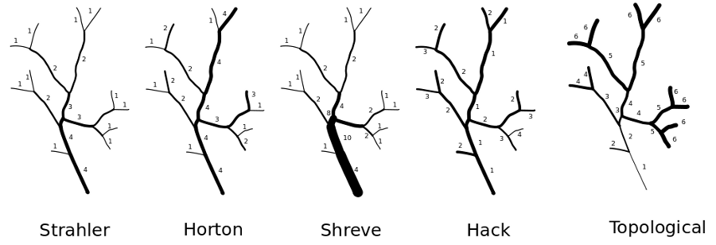

DESCRIPTION
The module r.stream.order calculates Strahler's and other stream
hierarchy methods. It is a basic module for topological analysis of
drainage networks.
NOTES
The module can work only if direction map, stream_rast
map and the computational region have the same settings.
It is also required that the stream_rast map and the
direction map come from the same source. For lots of reason this
limitation probably cannot be omitted. This means if stream_rast
map comes from
r.stream.extract also the
direction map
from r.stream.extract
must be used. If stream network was generated with MFD method also MFD
direction map must be used. Nowadays if direction map comes from
r.stream.extract must be
patched by direction map
from r.watershed (with
r.patch).
Input stream network map (stream_rast) may be produced using
either
r.watershed
or r.stream.extract. Since
stream network maps produced
by r.watershed
and r.stream.extract may
slightly differ in detail, it is required to use both stream and
direction maps produced by the same module. Non-stream cell values
must be set to NULL.
Input direction raster map with flow direction may be produced
using either r.watershed
or r.stream.extract.
If r.stream.extract
output map is used, it is non-NULL only where streams occur and NULL
elsewhere. NULL (nodata) cells are ignored, zero and negative values
are valid direction data only if they vary from -8 to 8 (CCW from East
in steps of 45 degrees). Flow direction map shall be of integer type
(CELL).
Optional input flow accumulation map may be produced
by r.watershed
or r.stream.extract. This
map is an option only if Horton's or Hack's ordering is
performed. Normally both Horton and Hack ordering is calculated on
cumulative stream length which is calculated internally. Flow
accumulation can be used if user wants to calculate the main channel
as the stream with the highest value of aqccumulation. Flow
accumulation map shall be of DCELL type, as is by default produced by
r.watershed or converted to
DCELL with r.mapcalc.
If -z is specified than r.stream.order creates
zero-value background instead of NULL (no-data). For some reason (like
map algebra calculation) zero-valued background may be required.
If -a is specified than r.stream.order uses
accumulation raster map instead of cumulated stream length to
determine main branch at bifurcation. Works well only with stream
network produced with SFD algorithm.
Flag -m force to use segment library to optimise memory
consumption during analysis. Recommended only for very large data
sets.
Input elevation map can be of type CELL, FCELL or DCELL. It is
used to calculate geometrical properties of the network stored in the
table.
Output stream_vect vector map stores stream network. It has a
table associated, where stream network topology can be stored. Because
r.stream.order is prepared to work either
with r.watershed or
r.stream.extract, it may
be used to create corrected stream vector from
r.watershed results.
r.stream.order may produce various output raster
maps strahler (Strahler's stream order raster
map), shreve (Shreve's stream magnitude raster
map), horton (Horton's stream order raster map - requires flow
accumulation map), hack (Hack's main streams output raster
map), and topo (topological dimension streams raster map).
Stream ordering example

Strahler's stream order
Strahler's stream order is a modification of Horton's streams order
which fixes the ambiguity of Horton's ordering. In Strahler's
ordering the main channel is not determined; instead the ordering is
based on the hierarchy of tributaries. The ordering follows these
rules:
- if the node has no children, its Strahler order is 1.
- if the node has one and only one tributary with Strahler greatest
order i, and all other tributaries have order less than i, then the
order remains i.
- if the node has two or more tributaries with greatest order i,
then the Strahler order of the node is i + 1.
Strahler's stream ordering starts in initial links which assigns order
one. It proceeds downstream. At every node it verifies that there are
at least 2 equal tributaries with maximum order. If not it continues
with highest order, if yes it increases the node's order by 1 and
continues downstream with new order.
Advantages and disadvantages of Strahler's ordering
Strahler's stream order has a good mathematical background. All
catchments with streams in this context are directed graphs, oriented
from the root towards the leaves. Equivalent definition of the
Strahler number of a tree is that it is the height of the largest
complete binary tree that can be homeomorphically embedded into the
given tree; the Strahler number of a node in a tree is equivalent to
the height of the largest complete binary tree that can be embedded
below that node. The disadvantage of that methods is the lack of
distinguishing a main channel which may interfere with the analytical
process in highly elongated catchments
Horton's stream ordering
Horton's stream order applies to the stream as a whole but not to
segments or links since the order on any channel remains unchanged
from source till it "dies" in the higher order stream or in the outlet
of the catchment. The main segment of the catchment gets the order of
the whole catchment, while its tributaries get the order of their own
subcatchments. The main difficulties of the Horton's order are
criteria to be considered to distinguish between "true" first order
segments and extension of higher order segments. That is the reason
why Horton's ordering has rather historical sense and is substituted
by the more unequivocal Strahler's ordering system. There are no
natural algorithms to order stream network according to Horton'
paradigm. The algorithm used in r.stream.order requires to first
calculate Strahler's stream order (downstream) and next recalculate to
Horton ordering (upstream). To make a decision about proper ordering
it uses first Strahler ordering, and next, if both branches have the
same orders it uses flow accumulation to choose the actual link. The
algorithm starts with the outlet, where the outlet link is assigned
the corresponding Strahler order. Next it goes upstream and determines
links according to Strahler ordering. If the orders of tributaries
differ, the algorithm proceeds with the channel of highest order, if
all orders are the same, it chooses that one with higher flow length
rate or higher catchment area if accumulation is used. When it reaches
the initial channel it goes back to the last undetermined branch,
assign its Strahler order as Horton order and goes upstream to the
next initial links. In that way stream orders remain unchanged from
the point where Horton's order have been determined to the source.
Advantages and disadvantages of Horton's ordering
The main advantages of Horton's ordering is that it produces natural
stream ordering with main streams and its tributaries. The main
disadvantage is that it requires prior Strahler's ordering. In some
cases this may result in unnatural ordering, where the highest order
will be ascribed not to the channel with higher accumulation but to
the channel which leads to the most branched parts of the catchment.
Shreve's stream magnitude
That ordering method is similar to Consisted Associated Integers
proposed by Scheidegger. It assigns magnitude of 1 for every initial
channel. The magnitude of the following channel is the sum of
magnitudes of its tributaries. The number of a particular link is the
number of initials which contribute to it.
Scheidegger's stream magnitude
That ordering method is similar to Shreve's stream magnitude. It
assigns magnitude of 2 for every initial channel. The magnitude of the
following channel is the sum of magnitudes of its tributaries. The
number of a particular link is the number of streams -1 contributing
to it. Consisted Associated Integers (Scheidegger) is available only
in attribute table. To achieve Consisted Associated Integers
(Scheidegger) raster the result of Shreve's magnitude is to be
multiplied by 2:
r.mapcalc expr="scheidegger = shreve * 2.0"
Drwal's stream hierarchy (old style)
That ordering method is a compromise between Strahler ordering and
Shreve magnitude. It assigns order of 1 for every initial channel. The
order of the following channel is calculated according Strahler
formula, except, that streams which do not increase order of next
channel are not lost. To increase next channel to the higher order R+1
are require two channels of order R, or one R and two R-1 or one R,
and four R-2 or one R, one R-1 and two R-2 etc. The order of
particular link show the possible value of Strahler'order if the
network was close to idealised binary tree. Drwal's order is
aviallable only in attribute table.To achieve Drwal's raster the
result of Shreve's magnitude is to be recalculated according
formula: floor(log(shreve,2))+1
r.mapcalc expr="drwal = int(log(shreve,2.0)) + 1.0"
Advantages and disadvantages of Drwal's hierarhy
The main advantages of Drwal's hierarchy is that it produces natural
stream ordering with which takes into advantage both ordering and
magnitude. It shows the real impact of particular links of the network
run-off. The main disadvantage is that it minimise bifuraction ratio
of the network.
Hack's main streams or Gravelius order
This method of ordering calculates main streams of main catchment and
every subcatchments. Main stream of every catchment is set to 1, and
consequently all its tributaries receive order 2. Their tributaries
receive order 3 etc. The order of every stream remains constant up to
its initial link. The route of every main stream is determined
according to the maximum flow length value of particular streams. So
the main stream of every subcatchment is the longest stream or stream
with highest accumulation rate if accumulation map is used. In most
cases the main stream is the longest watercourse of the catchment, but
in some cases, when a catchment consists of both rounded and elongated
subcatchments these rules may not be maintained. The algorithm assigns
1 to every outlets stream and goes upstream according to maximum flow
accumulation of every branch. When it reaches an initial stream it
step back to the first unassigned confluence. It assigns order 2 to
unordered tributaries and again goes upstream to the next initial
stream. The process runs until all branches of all outlets are
ordered.
Advantages and disadvantages of main stream ordering
The biggest advantage of that method is the possibility to compare and
analyze topology upstream, according to main streams. Because all
tributaries of main channel have order of 2, streams can be quickly
and easily filtered and its proprieties and relation to main stream
determined. The main disadvantage of that method is the problem with
the comparison of subcatchment topology of the same
order. Subcatchments of the same order may be both highly branched and
widespread in the catchment area and a small subcatchment with only
one stream.
Topological dimension streams order
This method of ordering calculates topological distance of every
stream from catchment outlet.
Stream network topology table description connected with vector file
- cat integer: category;
- streaminteger: stream number, usually equal to cat;
- next_stream integer: stream to which contribute current
stream (downstream);
- prev_streams; two or more contributing streams (upstream);
- strahler integer: Strahler's stream order:
- horton integer: Hortons's stream order:
- shreve integer: Shreve's stream magnitude;
- scheidegger integer: Scheidegger's Consisted Associated
Integers;
- drwal integer: Drwal's stream hierarchy;
- hack integer: Hack's main streams or Gravelius order;
- topo integer: Topological dimension streams order;
- length double precision: stream length;
- cum_length double precision: length of stream from source;
- out_dist double precision: distance of current stream init
from outlet;
- stright double precision: length of stream as stright line;
- sinusiod double precision: fractal dimension: stream
length/stright stream length;
- elev_init double precision: elevation of stream init;
- elev_outlet double precision: elevation of stream outlet;
- drop double precision: difference ttetween stream init and
outlet + drop outlet;
- out_drop double precision: drop at the outlet of the stream;
- gradient double precision: drop/length;
EXAMPLE
g.region -p -a rast=elevation
r.watershed elevation=elevation threshold=10000 drainage=direction stream=streams
r.stream.order stream_rast=streams direction=direction strahler=riverorder_strahler \
horton=riverorder_horton shreve=riverorder_shreve hack=riverorder_hack \
topo=river_topodim
# vector river network
r.watershed elevation=elevation threshold=10000 accumulation=accum
r.stream.order stream_rast=streams direction=direction elevation=elevation \
accumulation=accum stream_vect=river_vector
REFERENCES
- Drwal, J., (1982), Wyksztalecenie i organizacja sieci hydrograficznej jako
podstawa oceny struktury odplywu na terenach m;odoglacjalnych, Rozprawy i
monografie, Gdansk 1982, 130 pp (in Polish)
- Hack, J., (1957), Studies of longitudinal stream profiles in Virginia and
Maryland,
U.S. Geological Survey Professional Paper, 294-B
- Horton, R. E. (1945), Erosional development of streams and their drainage
basins: hydro-physical approach to quantitative morphology, Geological
Society of America Bulletin 56 (3): 275-370
Scheidegger A. E., (1966), Statistical Description of River Networks.
Water Resour. Res., 2(4): 785-790
- Shreve, R., (1966),Statistical Law of Stream Numbers, J. Geol.,
74, 17-37.
- Strahler, A. N. (1952), Hypsometric (area-altitude) analysis of erosional
topology,Geological Society of America Bulletin 63 (11): 1117-1142
- Strahler, A. N. (1957), Quantitative analysis of watershed
geomorphology, Transactions of the American Geophysical Union 8 (6):
913-920.
- Woldenberg, M. J., (1967), Geography and properties of surfaces,
Harvard Papers in Theoretical Geography, 1: 95-189.
SEE ALSO
r.watershed,
r.mapcalc
r.stream.channel,
r.stream.distance,
r.stream.extract,
r.stream.segment,
r.stream.slope,
r.stream.snap,
r.stream.stats
See
also r.streams.*
modules wiki page.
AUTHOR
Jarek Jasiewicz
Last changed: $Date$